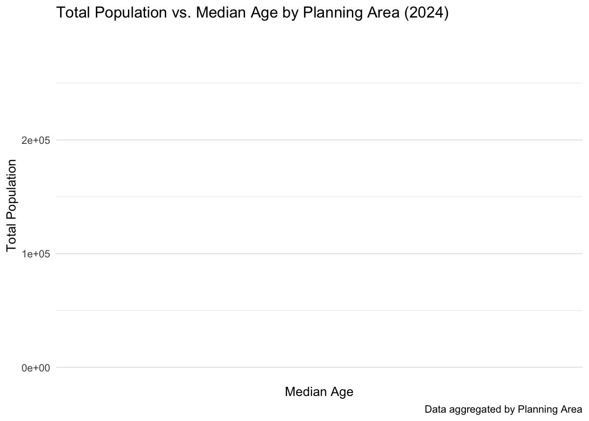
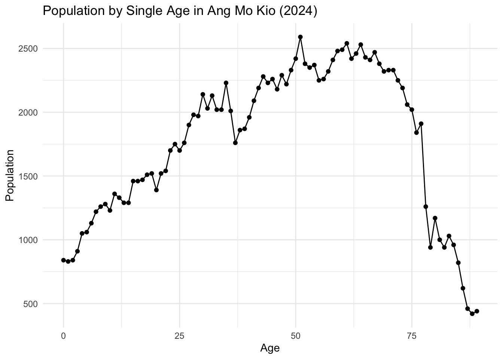
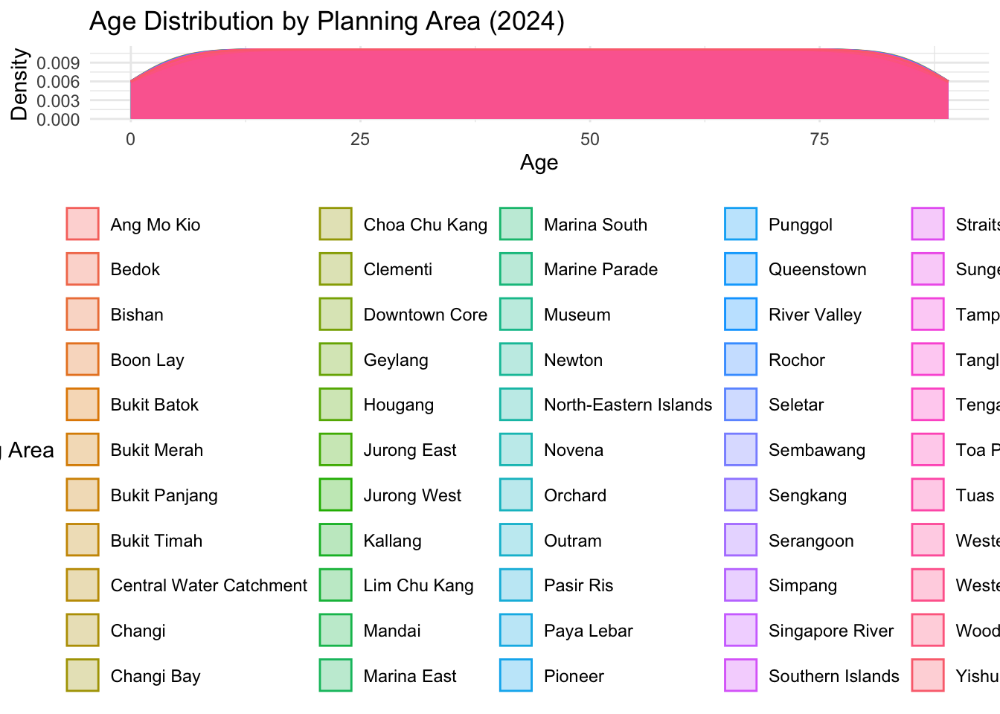
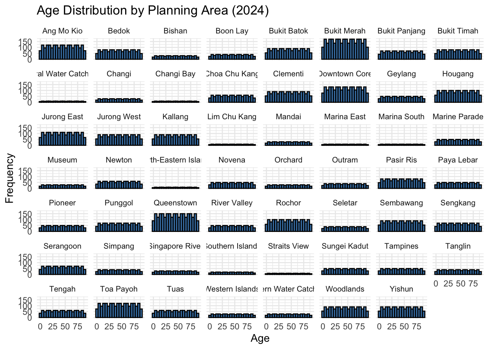
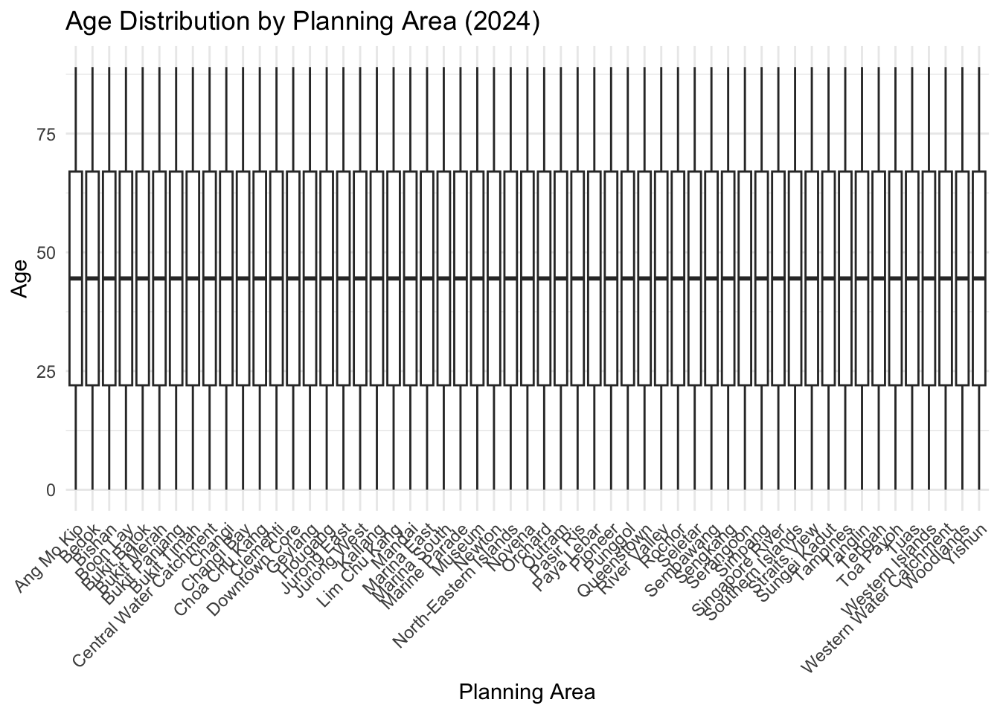
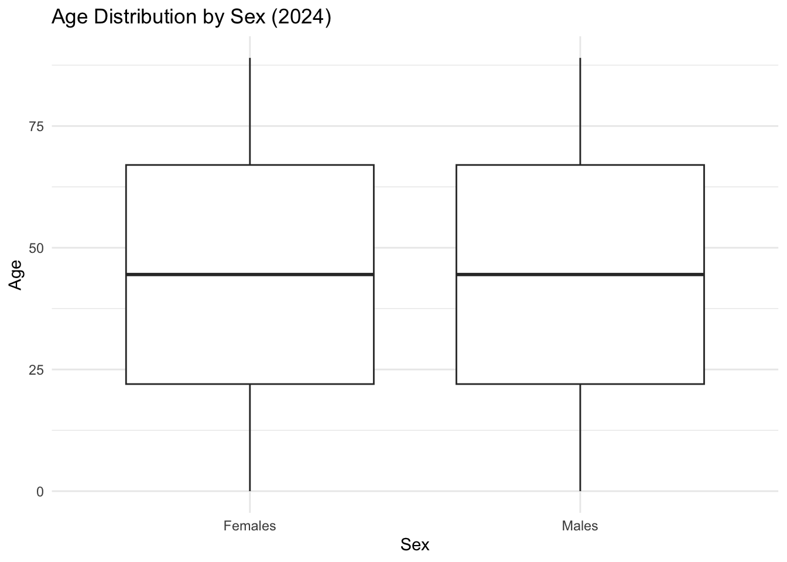
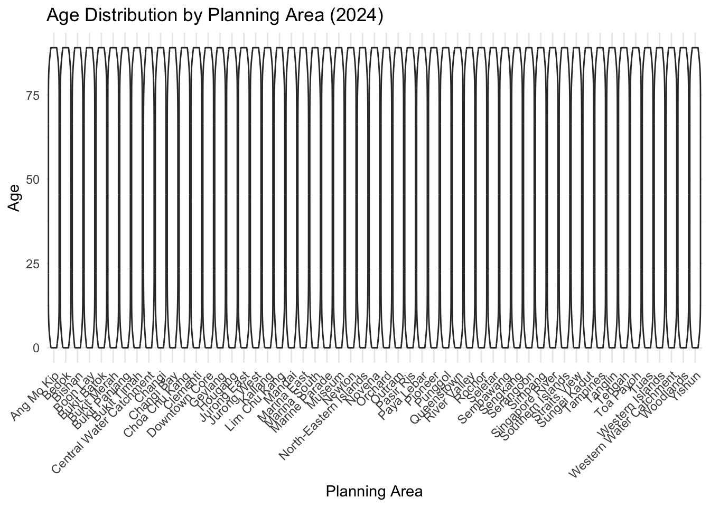
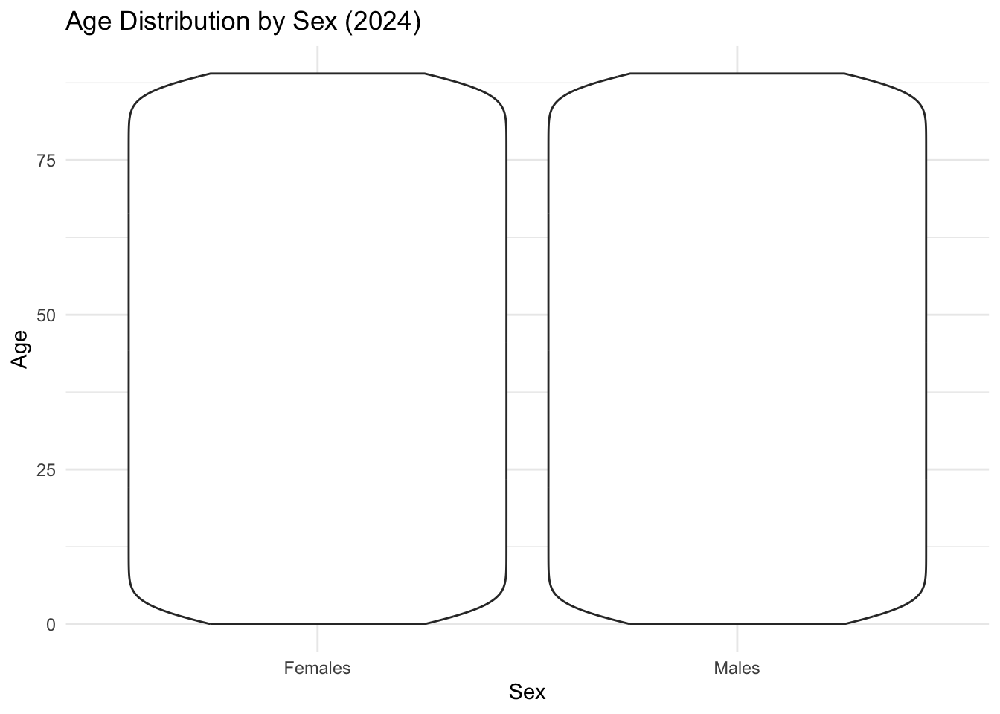
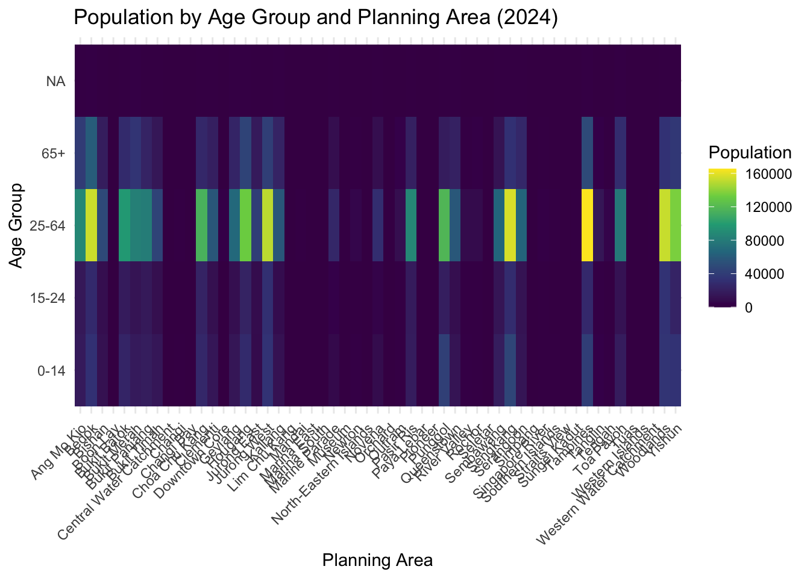
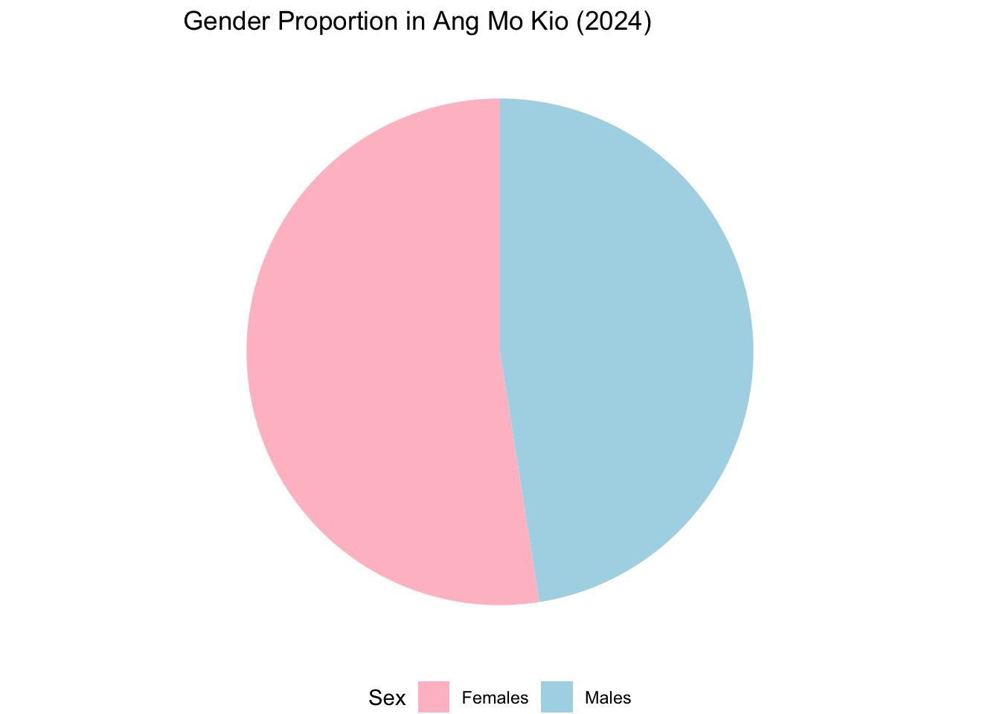

pacman::p_load(tidyverse, scales, glue, forcats, patchwork, janitor, ggrepel, patchwork,
ggthemes, hrbrthemes,
tidyverse)Take-home Exercise 1
Understanding Demographic Structures and Distribution of Singapore in 2024.
1 Overview
1.1 Background
In a rapidly evolving city-state like Singapore, understanding the demographic structure and spatial distribution of the population is essential for both policy making and business decision making. Taking the role of local online media company that provide informative … to the public, we aim to present data-driven insights that help inform our readers about the shift in population trends across the island.
With Singapore’s population growing older and increasing diverse [ add citation ] ,the ability to identify demographic patterns by planning area, age group, and gender can support a wide range of goals:
Urban Planning: Insights into population density and age structure help inform responsive and targeted planning of public services such as healthcare, education, and transportation.
Business and Personal Opportunities: Companies — or even individual entrepreneurs — can leverage this data to tailor their products and services based on the needs and preferences of residents in specific locations.
Public Awareness: Making demographic patterns accessible fosters greater understanding among citizens, empowering them to engage with and contribute to their local communities more meaningfully.
1.2 Understand the Data
The dataset is published by the Singapore Department of Statistics (DOS), the official national authority responsible for collecting, compiling, analyzing, and disseminating statistics in Singapore.
Dataset Title:
Singapore Residents by Planning Area/Subzone, Single Year of Age and Sex, June 2024
This dataset provides detailed demographic breakdowns based on planning area, subzone, age, sex, and resident count as of June 2024.
Who is Counted?
The dataset includes Singapore residents—defined as citizens and permanent residents (PRs) who usually live in Singapore and have not been away for a continuous period of 12 months or more.
It excludes non-residents, such as foreigners working, studying, or living in Singapore without permanent residency, except in some other statistics not covered in this dataset.
Data Coverage
The population count in this dataset is based on administrative records and covers the full resident population.
In broader census efforts, DOS samples households (e.g., around 150,000 households in the most recent census) for in-depth survey questions.
The estimated total resident population of Singapore is approximately 4 million as of June 2024 (to be confirmed from official sources).
——————— [ ADD CITATION ] ———————-
This dataset contains 60,424 rows and 6 variables, providing a detailed demographic breakdown of Singapore’s resident population as of June 2024. It includes 55 distinct planning areas (cities).
Variables Included:
———————- [ ADD TYPE DATA ] ———————-
| Variable | Variable extended | Description |
|---|---|---|
| PA | Planning Area | Geographic area used for urban planning and statistical reporting. |
| SZ | Subzone | Smaller geographic division within a Planning Area. |
| Age | Single Year of Age | Age of a resident, recorded in individual years. |
| Sex | Sex | Gender of a resident (e.g., male, female). |
| Pop | Resident Count | Number of residents in a specific area, age group, and sex. |
| Time | Time / Period | Specific time point or interval to which the data refers. |
Important Notes
The Planning Areas used in this dataset are based on the Urban Redevelopment Authority’s (URA) Master Plan 2019. Although the data represents the year 2024, the spatial boundaries align with URA’s 2019 definitions. For example, areas like Ang Mo Kio are delineated according to this version of the planning map.
Since the current analysis is limited to this specific dataset, using the 2019 planning area definitions does not present an issue.
Note
NOTICE !
If future comparisons with past years or other datasets are required, and those datasets use different planning area definitions, further alignment or reconciliation of planning boundaries must be conducted to ensure consistency in the analysis.
Data Limitation
———————- [ CONSIDER IF THIS PART REDUNDANT ] ———————-
This dataset excludes residents who have been continuously overseas for 12 months or more as of the reference period. Thus, it reflects the actively residing population, not the total number of Singapore citizens or residents.
Population figures (
Pop) have been rounded to the nearest 10, meaning that minor discrepancies may occur in aggregated totals. This rounding simplifies the data but reduces exact precision.
1.3 Task
As a local online media company that publishes daily content across digital platforms, the objective is to develop a data-driven article on the demographic structure and distribution of Singapore’s population in 2024. The article aims to present key insights and patterns using clear, visual storytelling to engage a wide public audience.
To achieve this, we will utilize the tidyverse family of R packages for data wrangling and transformation, and the ggplot2 package (along with relevant extensions) for creating impactful and informative visualizations.
MUST BE STATIC PLOT & VALUE DISTRIBUTION NOT MAP
1.4 Working Plan and Content Directions
Overall Goal: To uncover demographic trends in age, gender, and geographic distribution that are meaningful for public understanding and practical applications.
Understanding the population …….. can help in various sectors decision making
Understanding Service Needs
For planners and policymakers, this is important. If they’re trying to figure out how many school places are needed, they want to know how many school-aged children are actually in Singapore, not those living overseas.
Economic Considerations
businesses might be more interested in the number of people who are currently in Singapore and likely to be consumers.
Analysis Directions:
1. Understanding Population Structure
Explore the age distribution by gender across Singapore.
Identify population peaks (e.g., baby boomers, school-age children, aging population).
Highlight gender ratios and age groups concentrated in specific planning areas.
2. Understanding Service Needs
Insights into the number of children, working-age adults, and seniors can support decision-making for:
Education planning (e.g., school placement)
Healthcare services (e.g., clinics for elderly care)
Transport planning (e.g., routes to support population centers)
3. Economic and Business Opportunities
Businesses can leverage population data to:
Identify high-density or youth-concentrated zones for targeted marketing.
Plan locations for retail outlets, services, or new housing projects.
Tailor products to demographic characteristics of specific areas.
4. Public Awareness and Engagement
Help residents and readers:
Understand the composition of their local communities.
Appreciate how urban growth and aging trends shape daily life.
Be more informed and engaged citizens.
2 Get Ready
[ add code]
If the package is already installed, p_load() will load it into your current R session. if it’s not installed, p_load() will automatically download and install it from CRAN (the Comprehensive R Archive Network) before loading it.
{ list package used & its function ]
| Package | Purpose |
|---|
tidyverse |
A collection of packages for data manipulation, wrangling, and visualization (includes ggplot2, dplyr, tidyr, readr, etc.) |
ggplot2 ( part |
For creating advanced and customizable visualizations (already in tidyverse) |
scales |
Helps with formatting axes (e.g., thousands separators, percentages) |
glue |
Useful for combining strings and variables in labels or annotations |
forcats |
For working with factor variables, especially ordering categories |
patchwork |
To arrange multiple ggplot2 plots in one layout |
janitor |
Clean and format column names easily |
[ add code]
respo_data <- read_csv("~/Documents/SMU/April Term 2/Visual Analytics/patriciatrisno/ISSS608-VAA/Take-home_Exercise/Take-home_Ex01/data/respopagesex2024/respopagesex2024.csv")3 Data Wrangling and Tidying
This section focuses on preparing the data for analysis by checking for missing values and applying necessary recoding for readability and consistency.
3.1 Checking Missing Value
———————- [ HIDE CODE ] ———————-
# Check structure and missing values
glimpse(respo_data)Rows: 60,424
Columns: 6
$ PA <chr> "Ang Mo Kio", "Ang Mo Kio", "Ang Mo Kio", "Ang Mo Kio", "Ang Mo K…
$ SZ <chr> "Ang Mo Kio Town Centre", "Ang Mo Kio Town Centre", "Ang Mo Kio T…
$ Age <chr> "0", "0", "1", "1", "2", "2", "3", "3", "4", "4", "5", "5", "6", …
$ Sex <chr> "Males", "Females", "Males", "Females", "Males", "Females", "Male…
$ Pop <dbl> 10, 10, 10, 10, 10, 10, 10, 10, 30, 10, 20, 10, 20, 30, 30, 10, 3…
$ Time <dbl> 2024, 2024, 2024, 2024, 2024, 2024, 2024, 2024, 2024, 2024, 2024,…summary(respo_data) PA SZ Age Sex
Length:60424 Length:60424 Length:60424 Length:60424
Class :character Class :character Class :character Class :character
Mode :character Mode :character Mode :character Mode :character
Pop Time
Min. : 0.0 Min. :2024
1st Qu.: 0.0 1st Qu.:2024
Median : 20.0 Median :2024
Mean : 69.4 Mean :2024
3rd Qu.: 90.0 3rd Qu.:2024
Max. :1180.0 Max. :2024 # Count of missing values in each column
colSums(is.na(respo_data)) PA SZ Age Sex Pop Time
0 0 0 0 0 0 Briefly there is no missing values, however thorugh manual quick data screening, we notice there are some areas that are continuously have 0 population, which notice to be….
Downtown Core -
xxx
xxx
we interpret those findings as below:Downtown Core (xxx) - Industrial area, less population work there
In this case, we will eliminate xxxxx while keep the ….
that we believe it also important variables and values that contribute to….
———————- [ EDIT ABOVE SHORT DESCRIBTION ] ———————-
———————- [ DELETING THE 0 POP ] ———————-
Boon Lay - (Liu Fang, Samulun, Shipyard, Tukang)
Bukit Merah - (Bukit merah - some 10 with lots of 0, City terminals, Singapore General Hospital)
Central Water Catchment - (Central Water Catchment)
Changi - (Changi Airport, Changi Point - few 10 mostly 0, Changi west - till mid age more pop after 0 pop, Changi bay )
Clementi - (Pandan, Toh Tuck)
Downtown Core (Anson, Bayfront Subzone, Bugis - most 0 with some 10, Cecil - most 0 with some 10, City Hall, Clifford Pier, Marina Centre, Maxwell, Nicoll, Phillip , Raffles Place , tanjong Pagar some 10 and 20 and mostly 0, )
Getlang (kallang Way)
Hougang ( Defu Industrial Park, Lorong Halus,
Jurong east (International Business Park, Jurong Gateway - more 0 with mid age some 10, Jurong Port, Jurong River, lakeside (Business), Lakeside (Leisure) - more 0 some 10 from mid to 90 over, Penjuru Crescent)
Jurong West ( Chin Bee, Kian Teck, Safti)
Kallang (Kallang Bahru, Kampong Bugis mostly 10 and 20 ?)
Lim Chu Kang (Lim Chu Kang)
Mandai (Mandai East, Mandai Estate mostly 10 and some 20, Mandai West)
Marina East (Marina East, Marina South, East Coast)
Marine Parade (Marina east (Mp))
Museum ( Bras Basah, Dhoby Ghaut - most 0 and 10, Fort canning)
Newton (Goodwood Park most 10 and 20, Istana Negara, Monk’s Hill most 10 with somes 0, Newton Circus most 0 with some 10, Orange Grove most 10 some 20,
North-Eastern Islands ( North-Eastern Islands,
Novena (Dunearn - most 10 20 30 40 (is that landed types) , Malcolm most 0 and 10, Moulmein same as dunearn, Mount Pleasant ( most 0 some 10)
Orchad (Boulevard most 0 some 10, Somerset, Tanglin most 0 some 10)
Outram (China Square, People’s Park)
Pasir Ris (Loyang east most 10 some 20, Loyang West most 0 some 10 from 64 67–, Pasir Ris Wafer fab Park)
Paya Lebar (Airport Road, Paya Lebar East, Paya Lebar North, Paya Lebar West, Plab)
Pioneer (Benoi Sector, Gul Basin, Gul Circle, Joo Koon, Pioneer Sector)
Punggol (Coney Island, Punggol Canal)
Queenstown (Kent Ridge most 10 20 30, National University Of S’pore, One North most 10, Pasir Panjang 1 most 10 20 30 40 some 0 50, Pasir Panjang 2 mpost 10 20 30 0 some 40, Port , Queensway, Singapore Polytechnic,
River Valley ( Institution Hill most 10 20 30 40 some 0 50, One Tree Hill most 0 10, Oxley, most 0 10, some 20, Paterson)
Rochor (Bencoolen most 10 some 0 20, Farrer Park most 10 20, Kampong Glam, Little India most 10 0, Mackenzie, Mount Emily most 10 somes 20, Rochor Canal, Selegie, Sungei Road most 10 20, Victoria most 0 some 10 20)
Seletar ( Pulau Punggol Barat, Pulau Punggol Timor, Seletar, Seletar Aerospace Park)
Sembawang (Sembawang Straits most 10 20, Senoko North, The Wharves)
Sengkang (Lorong Halus North , Sengkang West )
Serangoon (Serangoon North Ind Estate)
Simpang (Pulau Seletar, Simpang North, Simpang South, Tanjong Irau)
Singapore River (Boat Quay, Clarke Quay, Robertson Quay most 10 20 30 some 40 50)
Southern Islands (Sentosa most 10 20 30 some 0 40, Southern Group)
Straits View (Straits View)
Sungei Kadut (Gali Batu, Kranji, Pang Sua, Reservoir View, Turf Club most 0 somes 10)
Tampines ( Xilin most 10 some 0 20)
Tanglin (Ridout most 10 somes 0, Tyresal most 10 20 30, Brickland)
Tengah (Brickland, Forest Hill, Garden, Park, Tengah Industrial Estate0
Tuas ( Tengeh, Tuas Bay, Tuas North, Tuas Promenade, Tuas View, Tuas View Extension)
Western Island ( Jurong Island And Bukom, Semakau, Sudong)
Western Water Catchment ( Bahar, Cleantech, Murai, most 10 some 10 )
Woodlands ( Greenwood Park, Midview, Senoko West, Woodlands Regional Center
Yishun ( Nee Soon, Springleaf mst 10 20 30, Yishun Central most 10 20)
[ edited ]
( Liu Fang, Samulun, Shipyard, Tukang, City terminals, Singapore General Hospital, Central Water Catchment, Changi Airport, Changi Bay, Pandan, Toh Tuck, Anson, Bayfront Subzone, City Hall, Clifford Pier, Marina Centre, Maxwell, Nicoll, Phillip , Raffles Place, Kallang Way, Defu Industrial Park, Lorong Halus, International Business Park, Jurong Port, Jurong River, lakeside (Business), Penjuru Crescent, Chin Bee, Kian Teck, Safti, Kallang Bahru, Lim Chu Kang, Mandai East, Mandai West, Bras Basah, Marina East, Marina South, East Coast, Marina East (Mp), Istana Negara, North-Eastern Islands, Somerset, China Square, People’s Park, Pasir Ris Wafer fab Park, Airport Road, Paya Lebar East, Paya Lebar North, Paya Lebar West, Plab, Benoi Sector, Gul Basin, Gul Circle, Joo Koon, Pioneer Sector, Coney Island, Punggol Canal, National University Of S’pore, Port , Queensway, Singapore Polytechnic, Paterson, Kampong Glam, Mackenzie, Rochor Canal, Selegie, Pulau Punggol Barat, Pulau Punggol Timor, Seletar, Seletar Aerospace Park, Lorong Halus North, Sengkang West, Senoko North, The Wharves, Serangoon North Ind Estate, Pulau Seletar, Simpang North, Simpang South, Tanjong Irau, Boat Quay, Clarke Quay, Southern Group, Straits View, Gali Batu, Kranji, Pang Sua, Reservoir View, Brickland, Brickland, Forest Hill, Garden, Park, Tengah Industrial Estate, Tengeh, Tuas Bay, Tuas North, Tuas Promenade, Tuas View, Tuas View Extension, Jurong Island And Bukom, Semakau, Sudong, Bahar, Cleantech, Greenwood Park, Midview, Senoko West, Woodlands Regional Center, Nee Soon)
3.2 Transformation
3.3 Recoding Needed
[ CHECK IF NEEDED OR NOT ]
4 Univariate Analysis
————–[ big picture on describing the use of vizualization to uncover…, understand…, etc ]————–
[ bin the age ]
respo_data %>%
group_by(Sex, Age) %>%
summarise(total_pop = sum(Pop)) %>%
mutate(pop_adjusted = ifelse(Sex == "Males", total_pop, -total_pop)) %>%
ggplot(aes(x = Age, y = pop_adjusted, fill = Sex)) +
geom_bar(stat = "identity") +
coord_flip() +
scale_y_continuous(labels = abs, name = "Population") +
scale_fill_manual(values = c("Females" = "pink", "Males" = "lightblue")) +
labs(title = "Singapore Resident Population by Age and Sex (2024)",
y = "Population",
fill = "Sex") +
theme_minimal()
library(tidyverse)
# Assuming your data frame is named 'your_data'
respo_data <- respo_data %>%
mutate(Age = as.numeric(Age))
age_breaks <- c(0, 15, 25, 65, Inf)
age_labels <- c("0-14", "15-24", "25-64", "65+")
respo_data %>%
mutate(age_group = cut(Age, breaks = age_breaks, labels = age_labels, right = FALSE)) %>%
group_by(PA, age_group) %>%
summarise(total_pop = sum(Pop), .groups = 'drop') %>%
ggplot(aes(x = PA, y = total_pop, fill = age_group)) +
geom_bar(stat = "identity") +
scale_fill_viridis_d(name = "Age Group") +
labs(title = "Population by Age Group and Planning Area (2024)",
x = "Planning Area",
y = "Total Population") +
theme_minimal() +
theme(axis.text.x = element_text(angle = 45, hjust = 1))
respo_data %>% # Replace 'your_data'
filter(Age >= 0 & Age <= 14) %>%
group_by(PA) %>%
summarise(total_children = sum(Pop), .groups = 'drop') %>%
ggplot(aes(x = PA, y = total_children)) +
geom_bar(stat = "identity", fill = "skyblue") +
labs(title = "Number of Children (0-14 years) by Planning Area (2024)",
x = "Planning Area",
y = "Number of Children") +
theme_minimal() +
theme(axis.text.x = element_text(angle = 45, hjust = 1))
library(tidyverse)
# Choose a specific Planning Area (PA) or Subzone (SZ) to focus on
selected_area <- "Ang Mo Kio" # Example
respo_data %>%
filter(PA == selected_area) %>%
ggplot(aes(x = Age, y = Pop)) +
geom_point() +
labs(title = paste("Population vs. Age in", selected_area, "(2024)"),
x = "Age",
y = "Population") +
theme_minimal()
respo_data %>%
filter(PA == selected_area) %>%
ggplot(aes(x = Age, y = Pop, color = Sex)) +
geom_point() +
labs(title = paste("Population vs. Age in", selected_area, "(2024) by Sex"),
x = "Age",
y = "Population",
color = "Sex") +
theme_minimal()
aggregated_data <- respo_data %>%
group_by(PA) %>%
summarise(total_population = sum(Pop),
median_age = median(Age), # Assuming Age is numeric
.groups = 'drop')
ggplot(aggregated_data, aes(x = median_age, y = total_population, label = PA)) +
geom_point(size = 3) +
geom_text(hjust = -0.1, vjust = -0.1, size = 3) + # Add labels for each point
labs(title = "Total Population vs. Median Age by Planning Area (2024)",
x = "Median Age",
y = "Total Population",
caption = "Data aggregated by Planning Area") +
theme_minimal()
library(tidyverse)
selected_area <- "Ang Mo Kio" # Example
respo_data %>%
filter(PA == selected_area) %>%
group_by(Age) %>%
summarise(total_pop = sum(Pop), .groups = 'drop') %>%
ggplot(aes(x = Age, y = total_pop)) +
geom_line() +
geom_point() + # Optional: Add points at each age
labs(title = paste("Population by Single Age in", selected_area, "(2024)"),
x = "Age",
y = "Population") +
theme_minimal()
respo_data %>%
ggplot(aes(x = Age, fill = PA, color = PA)) +
geom_density(alpha = 0.3) +
labs(title = "Age Distribution by Planning Area (2024)",
x = "Age",
y = "Density",
fill = "Planning Area",
color = "Planning Area") +
theme_minimal() +
theme(legend.position = "bottom")
age_breaks <- c(0, 15, 25, 65, Inf)
age_labels <- c("0-14", "15-24", "25-64", "65+")
respo_data %>%
mutate(age_group = cut(Age, breaks = age_breaks, labels = age_labels, right = FALSE)) %>%
group_by(PA, age_group) %>%
summarise(total_pop = sum(Pop), .groups = 'drop') %>%
ggplot(aes(x = PA, y = total_pop, fill = age_group)) +
geom_area() +
scale_fill_viridis_d(name = "Age Group") +
labs(title = "Population by Age Group and Planning Area (2024)",
x = "Planning Area",
y = "Total Population") +
theme_minimal() +
theme(axis.text.x = element_text(angle = 45, hjust = 1))
respo_data %>%
ggplot(aes(x = Age)) +
geom_histogram(bins = 20, fill = "steelblue", color = "black") +
facet_wrap(~ PA) +
labs(title = "Age Distribution by Planning Area (2024)",
x = "Age",
y = "Frequency") +
theme_minimal() +
theme(strip.text.x = element_text(size = 8))
library(tidyverse)
respo_data %>%
ggplot(aes(x = PA, y = Age)) +
geom_boxplot() +
labs(title = "Age Distribution by Planning Area (2024)",
x = "Planning Area",
y = "Age") +
theme_minimal() +
theme(axis.text.x = element_text(angle = 45, hjust = 1))
respo_data %>%
ggplot(aes(x = Sex, y = Age)) +
geom_boxplot() +
labs(title = "Age Distribution by Sex (2024)",
x = "Sex",
y = "Age") +
theme_minimal()
library(tidyverse)
respo_data %>%
ggplot(aes(x = PA, y = Age)) +
geom_violin() +
labs(title = "Age Distribution by Planning Area (2024)",
x = "Planning Area",
y = "Age") +
theme_minimal() +
theme(axis.text.x = element_text(angle = 45, hjust = 1))
respo_data %>%
ggplot(aes(x = Sex, y = Age)) +
geom_violin() +
labs(title = "Age Distribution by Sex (2024)",
x = "Sex",
y = "Age") +
theme_minimal()
age_breaks <- c(0, 15, 25, 65, Inf)
age_labels <- c("0-14", "15-24", "25-64", "65+")
age_group_population <- respo_data %>%
mutate(age_group = cut(Age, breaks = age_breaks, labels = age_labels, right = FALSE)) %>%
group_by(PA, age_group) %>%
summarise(total_pop = sum(Pop), .groups = 'drop')
ggplot(age_group_population, aes(x = PA, y = age_group, fill = total_pop)) +
geom_tile() +
scale_fill_viridis_c(name = "Population") +
labs(title = "Population by Age Group and Planning Area (2024)",
x = "Planning Area",
y = "Age Group") +
theme_minimal() +
theme(axis.text.x = element_text(angle = 45, hjust = 1))
selected_area <- "Ang Mo Kio" # Example
gender_proportion <- respo_data %>%
filter(PA == selected_area) %>%
group_by(Sex) %>%
summarise(total_pop = sum(Pop), .groups = 'drop') %>%
mutate(proportion = total_pop / sum(total_pop))
ggplot(gender_proportion, aes(x = "", y = proportion, fill = Sex)) +
geom_bar(stat = "identity", width = 1) +
coord_polar("y", start = 0) +
scale_fill_manual(values = c("Females" = "pink", "Males" = "lightblue")) +
theme_void() +
labs(title = paste("Gender Proportion in", selected_area, "(2024)")) +
theme(legend.position = "bottom")
4.1 Vizualiation 1
4.2 Vizualiation 2
4.3 Vizualiation 3
5 Exploratory Data Analysis
5.1 Vizualiation 1
5.2 Vizualiation 2
5.3 Vizualiation 3
————–[ IDEAS ]————–


6 Summary
————–[ add summary of findings ]————–
7 Limitation and Future Study
————–[ limitation & future work ]————–
only cover 2024 data and only until 24/9/2024
which CANNOT represent the
As mentioned above also, this data exclude residents who have been away from Singapore for a continuous period of 12 months or longer as at the reference period.
CANNOT
the number had been rounded to nearest 10
Data CANNOT represent the true number of
8 Reference
————–[ references ]————–